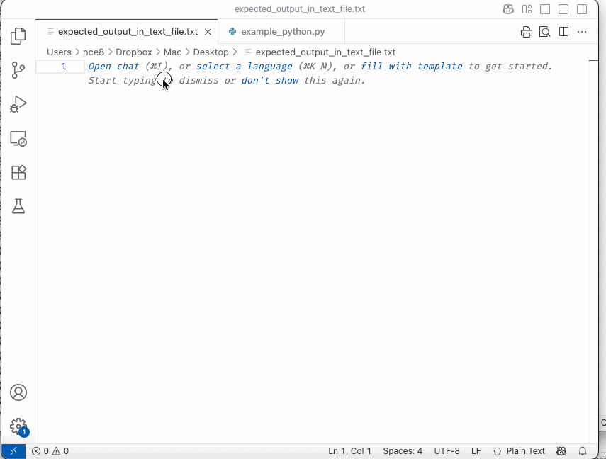

Finding Heart Rate Peaks#
As a researcher, one of the best parts about becoming a better programmer is that you can begin to develop your own measures of things you care about. If all you know how to do is use standard functions from standard libraries, it can be difficult to analyze data to see if it has a pattern that other people have not theorized before.
But when you become a better programmer, you can decide — based on your domain knowledge, expertise, and theory — what a measure should be, then develop code to implement that measure.
In this exercise, we will be writing code to identify heart rate peaks — areas where one’s heart rate hits a maximum value in a local neighborhood. If you care about exercise physiology, this may be of intrinsic interest to you. But if you care about a different type of research — political science, plant biology, public policy, etc. — then think of this as a chance to see how you can write bespoke code to measure whatever property of data matters to you.
NOTE: This exercise builds on the videos and context provided in the Coursera Python Programming Fundamentals, Module 4, “Heart Rate Example” section. In particular, please read/watch/complete the following before starting:
Heart Rate Example Introduction
Heart Rate Introduction
Heart Rate Peak Algorithm Reflection
Heart Rate Peaks (Video)
Heart Rate Code (Video)
Heart Rate isPeakAt
Assignment Overview#
In this assignment, you are going to write the function to determine if there is a “peak” at a given index of a list.
As we discussed in the videos leading up to this assignment, we will parameterize this over “w” which is the width of the region in which a peak has to be largest.
In particular, we will say that:
Given some index i, i is a peak within width W if
iis at leastW(there are enough points to the left)iis less thanlen(data)-W(there are enough points to the right)data[i]is greater than theWvalues of data to its left (left meaning smaller indices,i-1,i-2, …i-W)data[i]is greater than or equal to theWvalues of data to the right (right meaning greater indicesi+1,i+2, …i+W)
Note that as you want ALL of the above to be true, a good approach is to check if any are false. That is, your code should have this general structure:
if (condition 1 is false):
return False
if (condition 2 is false):
return False
for j in range(1, W+1):
if (data[i-j] does not meet condition 3):
return False
if (data[i+j] does not meet condition 4):
return False
pass
return True
You will want to make use of list indexing for this problem. We discussed list indexing in an earlier video, but if you need a quick refresher, you can do data[num] where num is some numerical expression. This could be, for example data[0], which is the first element of the list, or data[i], where i is some variable whose value is a number, or an arithmetic expression like data[i+1] or data[i+j] if i and j are both variables with numerical values.
Setup#
Open a new file in VS Code and save it as hrpeak.py. Then paste the following scaffolding into it:
# This is a testing helper function
# It is necessary for the file to run,
# but don't worry too much about understanding it.
def tests_for_hr_data(data, known_peaks, w):
print(f"Testing with {data} with w = {w}")
# Loop over all entries in list,
# if function says a given entry is
# a peak, record that.
peaks_from_function = []
for index in range(len(data)):
if is_peak_at(data, index, w):
peaks_from_function.append(index)
print(f"The test expected peaks at {known_peaks}.")
print(f"Your code found peaks at {peaks_from_function}.")
if known_peaks == peaks_from_function:
print("Your code PASSED!")
else:
print("Your code FAILED!")
# if we run this as the main module, run some test cases on our functions
if __name__ == "__main__":
# We will start by testing with w = 2
# The small example data from the video, which has peaks at indices 2 and 8
data0 = [160, 161, 162, 161, 160, 161, 162, 163, 164, 163, 162]
peaksat0 = [2, 8]
tests_for_hr_data(data0, peaksat0, 2)
# The second example from the video, with a "fake" peak at index 6
data1 = [160, 161, 162, 161, 160, 161, 163, 162, 164, 163, 162]
peaksat1 = [2, 8]
tests_for_hr_data(data1, peaksat1, 2)
# The third example from the video, with three consecutive 164 values
data2 = [160, 161, 162, 163, 164, 164, 164, 163, 162, 161, 160]
peaksat2 = [4]
tests_for_hr_data(data2, peaksat2, 2)
# Always good to test on the empty list: it has no peaks
data3 = []
peaksat3 = []
tests_for_hr_data(data3, peaksat3, 2)
# A one element list which has no peaks
# (we require at least w=2 points on each side)
data4 = [190]
peaksat4 = []
tests_for_hr_data(data4, peaksat4, 2)
# Still too few points for a peak with w = 2
data5 = [188, 190, 189]
peaksat5 = []
tests_for_hr_data(data5, peaksat5, 2)
# the smallest list we can make with a peak for w = 2
data6 = [187, 188, 189, 186, 180]
peaksat6 = [2]
tests_for_hr_data(data6, peaksat6, 2)
# Test with w = 1
tests_for_hr_data(data1, [2, 6, 8], 1)
tests_for_hr_data(data5, [1], 1)
# w=4
tests_for_hr_data(data0, [], 4)
tests_for_hr_data(data2, [4], 4)
tests_for_hr_data(data3, [], 4)
You will see that we have started you off with three things:
A “placeholder” for
is_peak_at. At the moment, this function just returnsTrue. You are going to replace that with the code for youris_peak_atfunction.The code for
count_lapsfrom the video, which uses youris_peak_atfunction.Some testing code (under
if __name__ == "__main__").
Writing is_peak_at#
Before you dive into writing is_peak_at, we want to take a moment to help you look at the testing code that we set up for you. Notice the first two non-comment lines:
data0 = [160, 161, 162, 161, 160, 161, 162, 163, 164, 163, 162]
peaksat0 = [2, 8]
Here, we are writing down the small example from one of the videos, and the answer to it (for w=2): it has peaks at indices 2 and 8 (also note that this answer is sufficient to give us the answer for count_laps—which would be the length of this list).
We then pass these to our testing function tests_for_hr_data(data, known_peaks, w). Initially, you’ll notice we do all our tests with w=2.
Now that we have shown you the test setup we have provided, go ahead and write the is_peak_at function.
After Writing is_peak_at#
Once you have written is_peak_at, be sure to run the tests we gave you by clicking the “Run arrow” in the upper right. We’ll briefly note that if you were developing this program on your own, you would want to write is_peak_at first, test it, and then write count_laps after you are confident in it. Since we developed count_laps together in the videos, we have gone ahead and included the code for it in what we provided to you.
Now is a good time to stop and assess your test cases: how confident do they make you in the code that you wrote? Take a moment to think about this before proceeding.
For me, the answer is “I am fairly confident when w=2, but not confident when w has any other value, as I only tested with w=2”.
Fortunately, we abstracted out our testing code into tests_for_hr_data, so we can just re-use that to test with some other values of w. (We will note that if we had not abstracted that code out into its own function, doing so now would be a good idea!)
We have already setup some data and answers for you for w=1 and w=4.
Checking Your Answers with diff#
As in past exercises, we provide the output you should expect if you’ve written your code correctly below. Unlike in past exercises, however, in this case the output is quite large… 168 lines.
Because comparing 168 lines of text to 168 lines of Python output is obviously silly, it’s time to introduce you to diff-ing. diffing is a way of comparing two text files to identify what is different between them. In this case of this exercise, it will show you where your results differ from the expected outputs.
But that isn’t the reason diff-ing is a go-to tool for programmers. What makes diff-ing so useful is that it can be used to compare two versions of code files to quickly identify just the bits that have changed. And that makes it incredibly powerful for isolating problems and for collaborators to quickly understand what their colleagues have been working on.
Here’s a GIF showing how you can use diff yourself. In it, I create a text file, copy-paste the expected output into that file, open and run my python file, copy-paste the output into a second file, then as VS Code to compare the two files.
As you can see, only the first line is colored because in the reference text world is capitalized and in my Python output it is not. All identical lines are in grey.

Output#
So when you’re ready, just click the triangle next to the world “Details” below to get the full expected output.
Testing with [160, 161, 162, 161, 160, 161, 162, 163, 164, 163, 162] with w = 2
The test expected peaks at [2, 8].
Your code found peaks at [2, 8].
Your code PASSED!
Testing with [160, 161, 162, 161, 160, 161, 163, 162, 164, 163, 162] with w = 2
The test expected peaks at [2, 8].
Your code found peaks at [2, 8].
Your code PASSED!
Testing with [160, 161, 162, 163, 164, 164, 164, 163, 162, 161, 160] with w = 2
The test expected peaks at [4].
Your code found peaks at [4].
Your code PASSED!
Testing with [] with w = 2
The test expected peaks at [].
Your code found peaks at [].
Your code PASSED!
Testing with [190] with w = 2
The test expected peaks at [].
Your code found peaks at [].
Your code PASSED!
Testing with [188, 190, 189] with w = 2
The test expected peaks at [].
Your code found peaks at [].
Your code PASSED!
Testing with [187, 188, 189, 186, 180] with w = 2
The test expected peaks at [2].
Your code found peaks at [2].
Your code PASSED!
Testing with [160, 161, 162, 161, 160, 161, 163, 162, 164, 163, 162] with w = 1
The test expected peaks at [2, 6, 8].
Your code found peaks at [2, 6, 8].
Your code PASSED!
Testing with [188, 190, 189] with w = 1
The test expected peaks at [1].
Your code found peaks at [1].
Your code PASSED!
Testing with [160, 161, 162, 161, 160, 161, 162, 163, 164, 163, 162] with w = 4
The test expected peaks at [].
Your code found peaks at [].
Your code PASSED!
Testing with [160, 161, 162, 163, 164, 164, 164, 163, 162, 161, 160] with w = 4
The test expected peaks at [4].
Your code found peaks at [4].
Your code PASSED!
Testing with [] with w = 4
The test expected peaks at [].
Your code found peaks at [].
Your code PASSED!